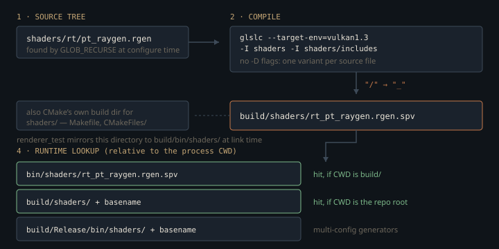

Monograph · Tree · ← Sitemap · Shader tree layout
shaders
Shader tree layout
core / rt / postprocess / compute / includes / shadow / particles.
Sixty-three lines of CMake and no permutation system
The whole shader build is two `file(GLOB_RECURSE)` calls over `shaders/` — one collecting sources, one collecting headers for dependency tracking — plus one `glslc` command per matched source and a custom target that depends on the results. There is no shader database, no variant matrix, no reflection step.
file(GLOB_RECURSE SHADER_SOURCESshaders/CMakeLists.txt:9The glob runs at *configure* time and carries no `CONFIGURE_DEPENDS`, so a newly added `.rgen` is invisible until CMake is re-run — the failure looks like a missing SPIR-V at load, not a build error. It also recurses without exclusions, which is why `shaders/_disabled/` is not archival: all 35 sources under it are globbed and compiled like everything else, for 91 SPIR-V modules total.
The compile line is where the architecture actually shows:
COMMAND ${GLSLC} --target-env=vulkan1.3 -I${CMAKE_CURRENT_SOURCE_DIR} -I${CMAKE_CURRENT_SOURCE_DIR}/includes ${SHADER} -o ${SPIRV}shaders/CMakeLists.txt:46Two include roots — `shaders/` and `shaders/includes/` — and **zero `-D` flags**. That omission decides how variation is expressed everywhere in the engine. A shader cannot be compiled twice with different defines, so the three path-tracer profiles are three separate source files (`pt_raygen.rgen`, `pt_raygen_realtime.rgen`, `pt_raygen_offline.rgen`) rather than one file with a `#define PROFILE`. Copying does not keep them in step, and they have not drifted equally: against the 1270-line `pt_raygen.rgen`, `diff` reports 141 added or removed lines for the 1355-line `pt_raygen_offline.rgen` and 1075 for the 1925-line `pt_raygen_realtime.rgen`. Two of the three are near-duplicates; the realtime profile is a fork.
What stays configurable is pushed into SPIR-V specialization constants patched at pipeline creation. There is exactly one `constant_id` in the entire shader tree — the path tracer's sampler choice, in a header all three raygens include:
layout(constant_id = 0) const uint SAMPLER_TYPE = SAMPLER_SOBOL;shaders/includes/rt/sampler_api.glsl:16It is supplied to the raygen stage alone, so changing samplers rebuilds the pipeline object and not the SPIR-V:
stages[0].pSpecializationInfo = &samplerSpecInfo;ohao/render/rt/path_tracer_pipeline.cpp:88The cost is visible in `forward.frag`, which guards its legacy Blinn-Phong lighting behind an override hook nothing in the build ever supplies:
#define USE_PBR 1 // Enable PBR by defaultshaders/core/forward.frag:17`glslc -M` confirms the consequence: `includes/lighting/blinn_phong.glsl` is not in the dependency closure of any shader in the tree. It is not dead by deletion, it is dead by there being no `-D` in the build.
The obvious alternative — a define-based permutation system, which is where every large engine ends up — is rejected here in favour of file-level duplication plus specialization constants. The trade is real: duplicated raygen files drift, so a fix landed in one profile does not reach the other two. What is bought is that there is no permutation explosion and no cache key to invalidate — each compile is one source file in, one `.spv` out, with no defines to reconstruct. The converse does not hold, because nothing prunes: `build/shaders/` here holds 96 modules for 91 sources, five of them left behind by shaders that have since been moved or deleted.
The flattening that became an ABI
Output names are the source path with directory separators replaced by underscores, then `.spv` appended:
string(REPLACE "/" "_" SHADER_FLAT_NAME ${SHADER_REL})shaders/CMakeLists.txt:42So `shaders/rt/rt_svgf_temporal.comp` becomes `rt_rt_svgf_temporal.comp.spv` — the stutter is the directory name surviving into the filename. That mangled string is not an internal detail; it is hard-coded at every C++ load site, which makes the flattening rule a binary interface between the build system and the renderer:
if (!I.createComputePipeline("rt_rt_svgf_temporal.comp.spv", I.temporalPipelineLayout, I.temporalPipeline))ohao/render/rt/denoise/atrous_denoise.cpp:256The mapping is not injective — `a/b.frag` and `a_b.frag` collide — and nothing in the build detects that. No collision exists in the tree today, but the invariant is maintained by nobody.

Where the SPIR-V is, and how each pipeline finds it
Every path is relative to the process working directory. There is no `install()` rule for shaders anywhere in the project, no environment variable, no absolute path, and no `.spv` committed to the repository — the binaries only ever exist in a build tree.
The RT stack names its modules under `bin/shaders/`:
const char* raygenSpv{"bin/shaders/rt_pt_raygen.rgen.spv"};ohao/render/rt/path_tracer.hpp:55`glslc` writes `build/shaders/`, so that prefix looks stale — but the build does still produce it. The `shaders` target mirrors the compiler's output directory into a `bin/shaders` beside the executables,
COMMAND ${CMAKE_COMMAND} -E make_directory "${OHAO_SHADER_RUNTIME_DIR}/bin/shaders"shaders/CMakeLists.txt:81and because the runtime output directory is the binary directory itself, that destination is `build/bin/shaders/` (or `build/<CONFIG>/bin/shaders/` under a multi-config generator):
set(CMAKE_RUNTIME_OUTPUT_DIRECTORY ${CMAKE_BINARY_DIR})CMakeLists.txt:41That copy used to be attached to each consuming test target. Two POST_BUILD `copy_directory` commands writing the same destination race under `-j8`, so the copy now happens once, in the `shaders` target, and the consumers only declare a dependency on it:
add_dependencies(renderer_test shaders)tests/renderer/CMakeLists.txt:44`renderer_test` is configured by default, so an ordinary configure-and-build produces both trees:
option(BUILD_RENDERER_TESTS "Build renderer pipeline tests" ON)CMakeLists.txt:115The loader's first candidate is the literal string, unmodified; its second strips the directory and retries under `build/shaders/`:
std::vector<std::string> searchPaths = {ohao/render/rt/path_tracer_pipeline.cpp:17So rung one hits when the process working directory is `build/`, and rung two hits when it is the repository root. Two directories work, not one — and they are not interchangeable. The mirror is a `copy_directory` snapshot taken at link time, so on this tree `build/bin/shaders/` carries 94 modules against `build/shaders/`'s 96, and the two disagree in *both* directions: each holds stale outputs the other does not.
The deferred stack is different again: `VulkanRenderer` probes seven candidate directories at construction, testing each with a single sentinel file,
std::ifstream test(path + "core_forward.vert.spv");ohao/gpu/vulkan/renderer.cpp:75and then publishes whatever it found to every render pass through a static:
RenderPassBase::setShaderBasePath(m_shaderBasePath);ohao/gpu/vulkan/renderer.cpp:185That makes one forward-rendering shader the discovery key for the entire deferred pipeline. The probe assigns only on a hit, but the publish is unconditional: if none of the seven candidates holds `core_forward.vert.spv`, an empty string is pushed, and `RenderPassBase`'s own default prefix is overwritten rather than left standing:
static inline std::string s_shaderBasePath = "bin/shaders/";ohao/render/deferred/render_pass_base.hpp:85What the passes fall back to is not a per-pass guess: every deferred pass loads through one `RenderPassBase::loadShaderModule`, whose three rungs are `s_shaderBasePath + name`, a hard-coded `build/shaders/`, and a `build/Release/bin/shaders/` for multi-config generators. With the base path emptied the first rung degenerates to a bare flat filename — a hit only if the working directory *is* the SPIR-V directory — so in practice the middle rung carries every load, and only from the repository root:
"build/shaders/" + pathStr,ohao/render/deferred/render_pass_base.cpp:27The failure is loud but misdirected. The throw names the flat filename the pass asked for and never the directory it searched, so a wrong working directory and a genuinely missing module produce the same message:
throw std::runtime_error("Failed to open shader file: " + pathStr);ohao/render/deferred/render_pass_base.cpp:36The dependency edge that is missing
Every shader is declared to depend on the full include list, so touching one header rebuilds the world:
DEPENDS ${SHADER} ${SHADER_INCLUDES} ${CMAKE_BINARY_DIR}/shadersshaders/CMakeLists.txt:47Measured on this tree, touching `includes/common/math.glsl` recompiles all 91 modules — a deliberate over-approximation that avoids depfile plumbing. The under-approximation next to it is the dangerous half. `SHADER_INCLUDES` is built from a pattern with a directory component in the middle:
"${CMAKE_CURRENT_SOURCE_DIR}/includes/**/*.glsl"shaders/CMakeLists.txt:32`**` is not the recursive wildcard it looks like, and it is not a one-level wildcard either. Under `GLOB_RECURSE` the trailing `*.glsl` is applied at every depth anyway; all `**/` contributes is a demand that *at least one* directory component sit between `includes/` and the file. Checked against CMake directly on a scratch tree, `includes/**/*.glsl` matches `includes/a/b/c/three.glsl` and does not match `includes/top.glsl`. The pattern therefore collects all 30 headers in subdirectories of `includes/` — which in this tree all happen to sit exactly one level down — and misses exactly the two at its top level, `noise.glsl` and `pbr_unpack.glsl`, along with everything under `shaders/rt/includes/`, which is outside the pattern's root entirely. Touching either copy of `pbr_unpack.glsl` and rebuilding recompiles **zero** shaders. The material unpack used by every raygen can be edited and shipped without the build noticing. (The second glob line, which adds `includes/water/*.glsl`, is redundant: that file already matches the first pattern.)
Two files named pbr_unpack.glsl
The tree contains `shaders/includes/pbr_unpack.glsl` and `shaders/rt/includes/pbr_unpack.glsl`, byte-identical today. All three raygens ask for the same string:
#include "includes/pbr_unpack.glsl"shaders/rt/pt_raygen.rgen:5A quoted include is resolved relative to the *including file's* directory before any `-I` root is consulted, and `shaders/rt/` has an `includes/` of its own — so `glslc -M` reports that the raygens compile `shaders/rt/includes/pbr_unpack.glsl` and never touch the copy under `shaders/includes/`. Neither the include roots nor the flat naming rule are involved; the winner is decided by directory adjacency.
Combine the two facts above and you get a silent-failure machine: edit the top-level `includes/pbr_unpack.glsl` and (a) it is the wrong copy — the raygens read the `rt/includes/` one — and (b) even editing the right copy triggers no recompilation, because neither file is in the dependency glob. The build will report success and the SPIR-V will be unchanged.
What is compiled but never loaded
Cross-referencing the 91 produced names against every `.spv` string literal in `ohao/`, `examples/` and `tests/` leaves 43 modules that no code path names: the 35 under `_disabled/`, plus eight live compute shaders including `compute_skinning.comp`, `compute_light_culling.comp` and `compute_gpu_cull.comp`. The include tree tells the same story from the other side — of 34 `.glsl` headers, 11 are outside the dependency closure of every shader, among them `shadow_csm.glsl` and `rt_masks.glsl`, the latter carrying a comment promising it mirrors `rt_visibility.hpp`.
The other compiler, still in the tree
`compile_shaders.sh` arrived in the same commit as the CMake flattening rule and uses the same `${subdir}_${name}.spv` convention, so the two agree on output names for one-level directories. They agree on very little else. The script walks a fixed directory list:
for subdir in core shadow postprocess compute debug; doshaders/compile_shaders.sh:56`debug/` does not exist, and `rt/`, `particles/` and `overlay/` are absent — so it covers 30 of the 91 sources and compiles no ray-tracing stage at all. It uses `glslangValidator` with a single include root and no `--target-env`, where CMake uses `glslc` with two roots and targets Vulkan 1.3:
if glslangValidator -V -I"$SHADER_DIR" -o "$output" "$input" 2>&1; thenshaders/compile_shaders.sh:41The compiler swap has a concrete consequence: `glslc` enables `GL_GOOGLE_include_directive` implicitly, `glslangValidator` requires the shader to declare it. Replaying the script's exact invocation over the four directories it walks, 29 files compile and exactly one fails — `shaders/postprocess/ssr.comp`, which uses `#include` without the `#extension` line. The script exits non-zero on a tree the real build compiles cleanly.
Each output is then copied into a Godot editor project, whose destination the script `mkdir -p`s first — so running it today recreates a directory tree the engine deleted:
GODOT_DIR="${SHADER_DIR}/../godot_editor/project/bin/shaders"shaders/compile_shaders.sh:15The commit that removed `godot_editor/` is the last commit that touched this file, and left the copy target pointing into it.
Contracts
- The `shaders` target is declared without `ALL`, so it is not a root of the default build in its own right. It is now pulled in through `add_dependencies` from `renderer_test` and `diff_gpu_probe`, which means a plain `cmake --build build` does recompile shaders — but only for as long as one of those two targets is configured. `--target shaders` remains the only way to say it directly. {{cite shaders/CMakeLists.txt "add_custom_target(shaders"}}
- The mirror from `build/shaders/` into `bin/shaders/` is owned by the `shaders` target itself, not by its consumers. Two consumers each attaching their own POST_BUILD `copy_directory` into that one destination raced under `-j8`; the single copy also closes the ordering gap where a consumer's mirror could snapshot SPIR-V from before the shaders were rebuilt. {{cite tests/diff/CMakeLists.txt "add_dependencies(diff_gpu_probe shaders)"}}
- Nothing deletes stale outputs. A renamed or moved shader leaves its old `.spv` in `build/shaders/`, where the runtime's basename fallback will happily load it.
- Every shader path in the engine is CWD-relative, and on a single-config build exactly two working directories resolve: the repository root (via the `build/shaders/` + basename rung) and `build/` (via the `bin/shaders/` literal, served by the `shaders` target's mirror). They are not equivalent for anything else — `model_viewer`'s hard-coded environment map exists only under the source tree, so that example still has to run from the root. {{cite examples/model_viewer.cpp "renderer.setEnvironmentMap("assets/test_models/env_studio.hdr");"}}
- Renaming a shader file, or moving it between directories, renames its SPIR-V and breaks every C++ load site that spells the flat name. The build reports success either way.
Source files
shaders/CMakeLists.txtshaders/includes/rt/sampler_api.glslohao/render/rt/path_tracer_pipeline.cppshaders/core/forward.fragohao/render/rt/denoise/atrous_denoise.cppohao/render/rt/path_tracer.hppCMakeLists.txttests/renderer/CMakeLists.txtohao/gpu/vulkan/renderer.cppohao/render/deferred/render_pass_base.hppohao/render/deferred/render_pass_base.cppshaders/rt/pt_raygen.rgenshaders/compile_shaders.shParent hub for the full pipeline narrative; this page is the file-level design unit. Sitemap · hover glossary terms anywhere.